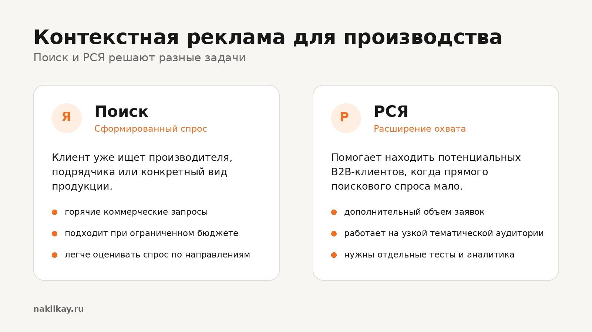
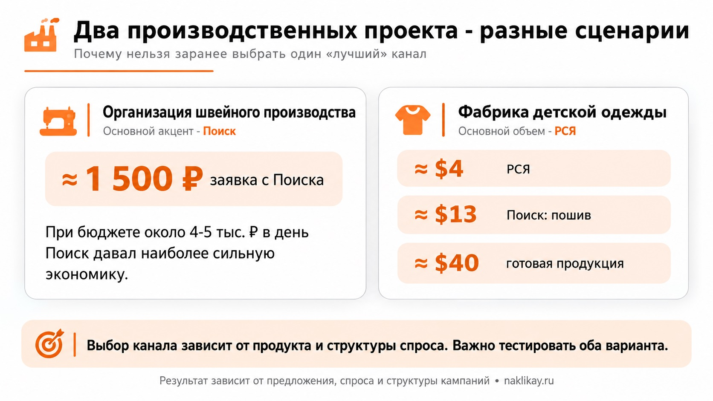

Блог о платном трафике
Контекстная реклама для производства: как получать B2B-заявки
Контекстная реклама для производства может приводить заявки от оптовых покупателей, дилеров, компаний и предпринимателей, которым нужна конкретная продукция или производственные мощности.
В производственных проектах важны структура спроса, цикл сделки и экономика каждого направления. Задача рекламы - не собрать максимум кликов, а найти сегменты спроса, которые стабильно превращаются в реальные обращения и продажи.

Чем реклама производства отличается от обычной контекстной рекламы
У производственных компаний часто одновременно есть узкий спрос, разные типы клиентов, длинная сделка и неодинаковая экономика товарных направлений. Поэтому объединять весь ассортимент в одну кампанию и оценивать её по общей цене лида обычно не стоит.
С чего начинается настройка контекстной рекламы для производства
Работу стоит начинать с разделения бизнеса на рекламные направления: изготовление на заказ, готовая продукция со склада, оптовые поставки, контрактное производство, СТМ и отдельные категории. Если у них разные покупатели, условия и экономика, рекламу лучше разделить.
Такой подход использовался в кейсе фабрики детской одежды: пошив на заказ и продажа готовой продукции оптом получили отдельные посадочные страницы и оценивались независимо.
Поиск или РСЯ - что лучше для производства
Универсального ответа нет. Поиск подходит для сформированного спроса - например, «изготовление деталей на заказ», «пошив одежды оптом» или «контрактное производство». РСЯ помогает находить дополнительную B2B-аудиторию, когда прямого спроса мало или требуется увеличить объём обращений.

При ограниченном бюджете Поиск часто становится первым каналом для теста. РСЯ требует отдельных креативов, тестов и контроля качества заявок. Подробнее о её механике - в статье что такое РСЯ в Яндекс Директ.
Как собирать запросы для производственной компании
Семантика строится вокруг продукта, типа услуги, назначения, материала, характеристик, оптового направления и географии - если они влияют на выбор поставщика. Отдельно нужно контролировать вакансии, обучение, чертежи, оборудование, инструкции и розничные запросы. При этом слишком жёстко ограничивать семантику не стоит: в узком B2B редкие запросы могут приводить хороших клиентов.
Какая посадочная страница нужна производству
Не стоит вести рекламу на общую корпоративную страницу с десятками направлений. Посадочная должна быстро объяснять, что производит компания, для кого работает, какие объёмы принимает, куда поставляет продукцию и как запросить расчёт. Для сложной продукции нужны примеры заказов, характеристики и подтверждение возможностей предприятия.
Как оценивать эффективность рекламы производства
Стоимость заявки полезна, но для B2B недостаточна. Отслеживайте цепочку: заявка → связь менеджера с клиентом → квалификация → расчёт или коммерческое предложение → заказ. При длинной сделке данные нужно связывать с CRM и передавать офлайн-конверсии, чтобы оптимизация учитывала качество обращений, а не только отправку любой формы.
Автоматические стратегии в Яндекс Директе
Автоматические стратегии меняют ставки по вероятности целевого действия, но им нужны корректные данные. Если все обращения записываются в одну цель независимо от качества, система не отличит крупную оптовую заявку от случайного обращения. В узком сегменте также важно не дробить кампании на множество маленьких групп, которым не хватает данных.
Сколько стоит контекстная реклама для производства
Единой нормальной цены лида нет. На неё влияют конкуренция, существующий спрос, средний чек, география, требования к заказу, сайт, оффер и качество аналитики.

В кейсе фабрики детской одежды заявки из РСЯ стоили около $4, обращения с Поиска на пошив - около $13, а направление готовой продукции давало лид примерно за $40. В кейсе организации швейного производства при бюджете около 4-5 тысяч рублей в день Поиск давал обращения примерно по 1 500 рублей. Эти цифры - примеры конкретных проектов, а не ориентир для всех производств.
Типичные ошибки в рекламе производственной компании
- Запускать весь ассортимент одной общей кампанией.
- Вести рекламу на общий сайт без чёткого предложения.
- Считать все обращения одинаковыми.
- Выбирать только Поиск или РСЯ без проверки фактического спроса.
- Оценивать кампанию только по кликам, CTR и цене перехода.
Когда контекстная реклама подходит производству
Яндекс Директ особенно полезен, когда клиенты уже ищут продукцию или услуги либо есть аудитория, которую можно охватить через РСЯ. Реклама не исправит слабое предложение, невозможность обработать обращения или отсутствие понимания допустимой цены клиента. Сначала определяются продуктовые направления, спрос и ограничения бизнеса, затем под них строятся кампании, посадочные страницы и аналитика.
Другие примеры работы - в разделе кейсов на naklikay.ru.